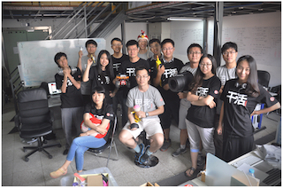
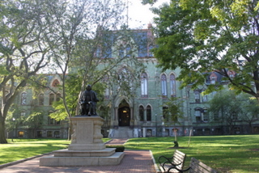

| 我是李龙毅。 |
 |
My name is Longyi Li. |
| 2013年我在北京创业，和志同道合的朋友们一起创办了幻腾智能。 |
 |
I started Phantom Inc. with friends in 2013. |
| 从2012年2月开始，我在甲骨文公司做iOS应用程序开发，于12月辞职回国。 |
|
I worked in Oracle as an iOS programmer from Feb 2012 to Dec 2012. |
| 2011年冬天，我完成了在宾夕法尼亚大学计算机系的硕士课程，结束了最值得怀念的学生时代。
|  |
With a Master of Computer & Information Science Degree, I graduated from University of Pennsylvania in 2011 Winter. |
| 本科永远是最难忘的，2010年秋天带着4年美好的回忆，我从清华大学电子系毕业。
|  |
I got my Bachelor of Engineering in Electronic Engineering from Tsinghua University, China in June 2010. |
| 我喜欢做一些有意思的东西，尤其是每天都能用的。比如这个无线体重秤就是我业余时间做的(文档)。在Oracle的时候，基本上我白天投入在写iOS程序中，晚上喜欢捣鼓一些小玩意。
|  |
I love to build thing that we can use every day. Actually, I am a day-time professional iOS programmer in Oracle and a night-time maker/hacker when I back home. This is the WiFi Scale I made recently. |
| 我很喜欢滑雪。这是我的linkedin主页 |
|
My favorite sport is Skiing. To learn more about me, see my Linkedin profile here. |